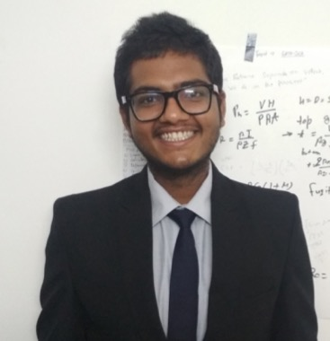
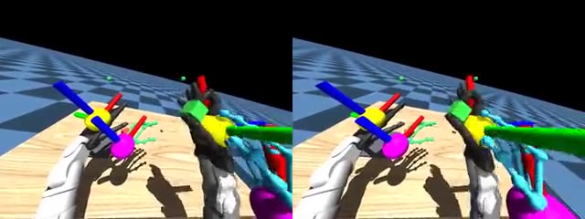
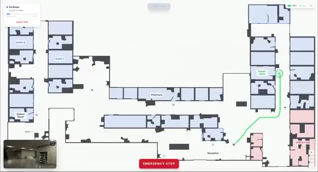

I work on robot manipulation, robot learning, sim-to-real transfer and SLAM, and have ten years of experience across hardware, control, perception and learning. My PhD research at IIT Jodhpur is on continual learning and sim-to-real transfer for manipulation. I also do contract work for robotics startups on industrial arms, humanoids and mobile robots.

Each project has its own page with more videos, images and details.
I train camera policies in simulation and run them on a real UR5 with an OnRobot RG2 gripper and wrist cameras. The simulator is MuJoCo-Warp, and the camera images are rendered from a Gaussian-splat scan of the lab. No real robot data is used for training.
AnchorFlow-VIO is an open-source monocular visual-inertial odometry system based on Basalt. I evaluated it on the LaMAria benchmark, and it runs at 84 frames per second on a desktop CPU. I also built a stereo-inertial SLAM system for a small mobile robot with a Jetson Nano 4 GB. It has loop closure, dense mapping and relocalisation.
My thesis is about adding new manipulation skills to one policy without storing the data of earlier tasks. I built a benchmark of 37 manipulation tasks and trained a separate teacher policy for each task. The teachers are then combined into one network one after another.
I designed, 3D-printed and assembled a 12-joint quadruped. The walking policy is trained with reinforcement learning in MuJoCo and transferred to the robot. The robot walks untethered at 0.3 m/s and did not fall in the recorded trials.
I wrote control and perception software for an xArm6 (250 Hz) and a Kinova Gen3 (1 kHz torque control). It is operated from a browser and has five controllers, including gravity compensation and Cartesian impedance control. It also has four metric depth models and SAM2 segmentation. I also built VR teleoperation with a Meta Quest 3 for collecting demonstrations.

I led the technical work of the team and was responsible for simulation and reinforcement learning. Fine-tuning a frozen GR00T policy with Diffusion Steering RL increased full-task success in simulation from 48.3% to 78.3%. I also built an RL pick task with an 11-DOF dexterous hand and a VR teleoperation system that supports six different hands. Project page →

I built the robot software: Nav2 navigation, MuJoCo simulation, a server on the robot and a web console for the operator. Project page →
I designed and built the software for the cell. Tasks are written as JSON plans made of general skills such as move, pick, place, detect and measure, and the same software runs the MuJoCo simulation and the real cell. I wrote 762 of the 880 commits in the ROS 2, Python, C++ and React codebase.
I built a dataset of 1,167 manipulation episodes with success and failure labels, trained reward models (mean absolute error 0.032, compared with about 0.2 for a published baseline) and tested RL fine-tuning of VLA policies. I also trained a 29-DOF arm and hand policy to take a test tube out of a rack with about 99% success in simulation.
I built MoveIt Pro behaviours and a differential inverse-kinematics planner plugin used in client projects, and optimised ROS 2 sonar mapping on embedded hardware. I also built Isaac Sim and Gazebo environments for deformable-object manipulation and gripper development.
I worked on vision-based navigation for a quadcopter in environments without GPS, and on RL methods for learning several vision-based manipulation tasks. The second work led to the Robotica paper.
Learning vision-based robotic manipulation tasks sequentially in offline reinforcement learning settings.
S. P. Yadav, R. Nagar, S. V. Shah. Robotica, 2024.
Paper · arXiv
Simulation environments I built for different projects: a desert environment with a 3D LiDAR model in Unity, deformable objects in Isaac Sim, and MuJoCo models of new mechanisms.
Voice dictation for Linux. A wake word or a key starts recording, and the text is typed into the active window.
Languages: Python, C++, TypeScript
Robotics: ROS 2, MoveIt, Nav2, Pinocchio, inverse kinematics, impedance and operational-space control, SLAM and VIO, camera calibration
Robot learning: PyTorch, reinforcement learning (PPO, TD3, SAC), imitation learning (ACT, diffusion policies), VLA policies (GR00T, OpenVLA), sim-to-real transfer
Simulation: MuJoCo and MuJoCo-Warp, mjlab, Isaac Sim, Gazebo, Unity, Gaussian splatting
Robots: UR5, Kinova Gen3, xArm6, Franka, FANUC CR-7iA/L, KUKA iiwa14, Unitree G1, Clearpath Husky, quadrupeds, quadcopters
Hardware: RealSense, ZED, IMU, LiDAR, Jetson, Arduino, CAD and 3D printing
Teaching assistant for Experimental Robotics at IIT Jodhpur. I have conducted ROS workshops, was Head (2015) and Mentor (2016) of the IIT Jodhpur Robotics Club, and was a Coursera mentor for Robotics: Estimation and Learning (2017).